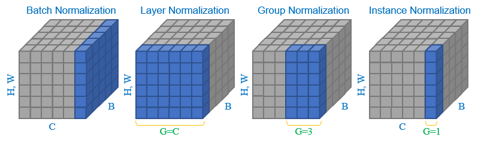
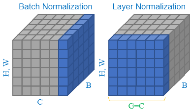

Normalization

Batch Normalization
对每个 mini batch \((z^{(1)}, \cdots, z^{(b)})\) , \(b\) batch size \(\mu\) \(\sigma^2\)
\[
\mu = \frac{1}{b}\sum_{i=1}^{b}z^{(i)}, \quad \sigma^2 = \frac{1}{b}\sum_{i=1}^{b}(z^{(i)}-\mu)^2
\]
随后有（为了数值稳定性引入一个很小的 \(\varepsilon>0\)
\[
z^{(i)}_{\text{norm}}=\frac{z^{(i)}-\mu}{\sqrt{\sigma^2+\varepsilon}}
\]
用以替换 \(z^{(i)}\) \(\tilde{z}^{(i)}\) \(z^{(i)}_{\text{norm}}\) ( )
\[
\tilde{z}^{(i)} = \gamma z^{(i)}_{\text{norm}} + \beta
\]
这里线性变换的参数 \(\gamma\) \(\beta\) \(w\)
于是，使用了 Batch Normalization \(z^{(i)}\) \(\tilde{z}^{(i)}\) \(a^{(i)}\)
Remark
有趣的是，每一层的偏置项 (bias) \(\beta\)
先 BN BN
Implementation in PyTorch
PyTorch 中，torch.nn.BatchNorm1d、torch.nn.BatchNorm2d 和 torch.nn.BatchNorm3d 分别用于一维、二维和三维数据的 Batch Normalization_BatchNorm。代码和数学公式的映射为：
self.weight: \(\gamma\) ，可学习参数self.bias: \(\beta\) ，可学习参数self.eps: \(\varepsilon\) ，数值稳定性参数
如果直接在 mini batch \(\mu_b\) \(\sigma^2_b\) \(\mu_g\) \(\sigma^2_g\) (momentum) \(p\)
\[
\begin{aligned}
\mu_g &\leftarrow (1-p)\mu_g + p\mu_b \\
\sigma^2_g &\leftarrow (1-p)\sigma^2_g + p\sigma^2_b\cdot \frac{b}{b-1}
\end{aligned}
\]
这里方差的更新中多乘了一个 \(\frac{b}{b-1}\) mini batch (biased estimate) (unbiased estimate) (Bessel's correction)
对应的代码和数学公式映射为
self.running_mean: \(\mu_g\) ，全局均值估计self.running_var: \(\sigma^2_g\) ，全局方差估计self.momentum: \(p\) ，动量参数
下面展示一下 _BatchNorm 的关键代码。为了简化代码，我们默认同时启用 affine=True 和 track_running_stats=True，即学习 \(\gamma\) \(\beta\)
训练时，动量默认选用 \(1.0 / B\) \(B\) mini batch momentum，则使用指定的动量。
推理时，动量不再有作用。
class _BatchNorm ( _NormBase ):
def __init__ (
self ,
num_features : int ,
eps : float = 1e-5 ,
momentum : Optional [ float ] = 0.1 ,
...
) -> None :
...
def forward ( self , input : Tensor ) -> Tensor :
self . _check_input_dim ( input )
exponential_average_factor = self . momentum
if self . training : # when training, and tracking mu and sigma^2
if self . num_batches_tracked is not None : # type: ignore[has-type]
self . num_batches_tracked . add_ ( 1 ) # type: ignore[has-type]
if self . momentum is None : # use cumulative moving average
exponential_average_factor = 1.0 / float ( self . num_batches_tracked )
else : # use exponential moving average
exponential_average_factor = self . momentum
return F . batch_norm (
input ,
self . running_mean if not self . training else None ,
self . running_var if not self . training else None ,
self . weight ,
self . bias ,
self . training ,
exponential_average_factor ,
self . eps ,
)
Layer Normalization
Layer Normalization 和 Batch Normalization \(\mu\) \(\sigma^2\) Batch Normalization 是沿着 mini batch \(\mu\) \(\sigma^2\) Layer Normalization \(\mu\) \(\sigma^2\)
可以从下图简单看到计算维度的差别：

因此，LayerNorm 在实现上比 BatchNorm BatchNorm 会考虑全局均值 / LayerNorm
设样本维度为 \(d\) \(d=h\times w\)
\[
\mu = \frac{1}{d}\sum_{j=1}^{d}z_{j}, \quad \sigma^2 = \frac{1}{d}\sum_{j=1}^{d}(z_{j}-\mu)^2
\]
Implementation in PyTorch
PyTorch 中，LayerNorm 代码和数学公式的映射为：
self.weight: \(\gamma\) ，可学习参数self.bias: \(\beta\) ，可学习参数self.eps: \(\varepsilon\) ，数值稳定性参数
同样，我们默认启用 self.weight 和 self.bias，即 elementwise_affine=True 且 bias=True，会发现把底层实现丢给 Functional
class LayerNorm ( Module ):
__constants__ = [ "normalized_shape" , "eps" , ... ]
normalized_shape : Tuple [ int , ... ]
eps : float
...
def __init__ (
self ,
normalized_shape : _shape_t ,
eps : float = 1e-5 ,
...
) -> None :
...
self . weight = Parameter ( torch . empty ( self . normalized_shape ))
self . bias = Parameter ( torch . empty ( self . normalized_shape ))
self . reset_parameters ()
def reset_parameters ( self ) -> None :
init . ones_ ( self . weight )
init . zeros_ ( self . bias )
def forward ( self , input : Tensor ) -> Tensor :
return F . layer_norm (
input , self . normalized_shape , self . weight , self . bias , self . eps
)
Instance Normalization 和 Group Normalization
Root Mean Square Layer Normalization (RMSNorm)
RMSNorm 是对 LayerNorm \(\mu\)
如果样本的均值为 0 RMSNorm LayerNorm
RMSNorm 相比 LayerNorm LLaMA RMSNorm
class RMSNorm ( torch . nn . Module ):
def __init__ ( self , dim : int , eps : float = 1e-6 ):
super () . __init__ ()
self . eps = eps
self . weight = nn . Parameter ( torch . ones ( dim ))
def _norm ( self , x ):
return x * torch . rsqrt ( x . pow ( 2 ) . mean ( - 1 , keepdim = True ) + self . eps )
def forward ( self , x ):
output = self . _norm ( x . float ()) . type_as ( x )
return output * self . weight
Adaptive Layer Normalization (AdaLN)
DiT (Diffusion Transformer) 的基本块大量使用了 AdaLN (Adaptive Layer Normalization) DiT AdaLN 的基本思想之前在 FiLM \(c\) \(x\)
\[
FiLM(F_{i,c}\mid \gamma_{i,c}, \beta_{i,c}) = \gamma_{i,c}F_{i,c} + \beta_{i,c}
\]
其中 \(\gamma_{i,c}=f_c(x_i)\) , \(\beta_{i,c}=h_c(x_i)\)
Prototype in U-Net
在 FiLM \(\gamma\) \(\beta\) ADM 代码 中就已经出现了利用条件嵌入通过激活函数和线性层后回归生成 \(\gamma\) \(\beta\) U-Net
ADM: Diffusion Models Beat GANs on Image Synthesis , NeurIPS 2021
class ResBlock ( TimestepBlock ):
def __init__ (
self ,
channels ,
emb_channels ,
dropout ,
out_channels = None ,
use_scale_shift_norm = False ,
dims = 2 ,
...
):
...
self . emb_layers = nn . Sequential (
nn . SiLU (),
linear (
emb_channels ,
2 * self . out_channels if use_scale_shift_norm else self . out_channels ,
),
)
self . out_layers = nn . Sequential (
normalization ( self . out_channels ),
nn . SiLU (),
nn . Dropout ( p = dropout ),
zero_module (
conv_nd ( dims , self . out_channels , self . out_channels , 3 , padding = 1 )
),
)
...
def _forward ( self , x , emb ):
...
emb_out = self . emb_layers ( emb ) . type ( h . dtype )
while len ( emb_out . shape ) < len ( h . shape ):
emb_out = emb_out [ ... , None ]
if self . use_scale_shift_norm :
out_norm , out_rest = self . out_layers [ 0 ], self . out_layers [ 1 :]
scale , shift = th . chunk ( emb_out , 2 , dim = 1 )
h = out_norm ( h ) * ( 1 + scale ) + shift
h = out_rest ( h )
else :
h = h + emb_out
h = self . out_layers ( h )
return self . skip_connection ( x ) + h
可见 modulate
\[
\mathrm{modulate}(x, \beta, \gamma) = x \cdot (1 + \gamma) + \beta
\]
AdaLN in DiT
不同于 U-Net out_norm 进行调制，DiT 中对注意力层 (Multi-head Self Attention, MSA) MLP \(\gamma, \beta\)
引入了门控机制 (gating mechanism) gate
输入的条件 \(c=t+y\)
最终形成的 DiT Block
def modulate ( x , shift , scale ):
return x * ( 1 + scale . unsqueeze ( 1 )) + shift . unsqueeze ( 1 )
class DiTBlock ( nn . Module ):
"""
A DiT block with adaptive layer norm zero (adaLN-Zero) conditioning.
"""
def __init__ ( self , hidden_size , num_heads , mlp_ratio = 4.0 , ** block_kwargs ):
super () . __init__ ()
self . norm1 = nn . LayerNorm ( hidden_size , elementwise_affine = False , eps = 1e-6 )
self . attn = Attention ( hidden_size , num_heads = num_heads , qkv_bias = True , ** block_kwargs )
self . norm2 = nn . LayerNorm ( hidden_size , elementwise_affine = False , eps = 1e-6 )
mlp_hidden_dim = int ( hidden_size * mlp_ratio )
approx_gelu = lambda : nn . GELU ( approximate = "tanh" )
self . mlp = Mlp ( in_features = hidden_size , hidden_features = mlp_hidden_dim , act_layer = approx_gelu , drop = 0 )
self . adaLN_modulation = nn . Sequential (
nn . SiLU (),
nn . Linear ( hidden_size , 6 * hidden_size , bias = True )
)
def forward ( self , x , c ):
shift_msa , scale_msa , gate_msa , shift_mlp , scale_mlp , gate_mlp = self . adaLN_modulation ( c ) . chunk ( 6 , dim = 1 )
x = x + gate_msa . unsqueeze ( 1 ) * self . attn (
modulate ( self . norm1 ( x ), shift_msa , scale_msa )
)
x = x + gate_mlp . unsqueeze ( 1 ) * self . mlp (
modulate ( self . norm2 ( x ), shift_mlp , scale_mlp )
)
return x
Remark
AdaLN 称为 Adaptive LN \(\gamma\) \(\beta\) LayerNorm elementwise_affine=False，即是不包括 \(\gamma\) \(\beta\) DiT 对 AdaLN 零初始化 ，论文中称为 AdaLN-Zero AdaLN